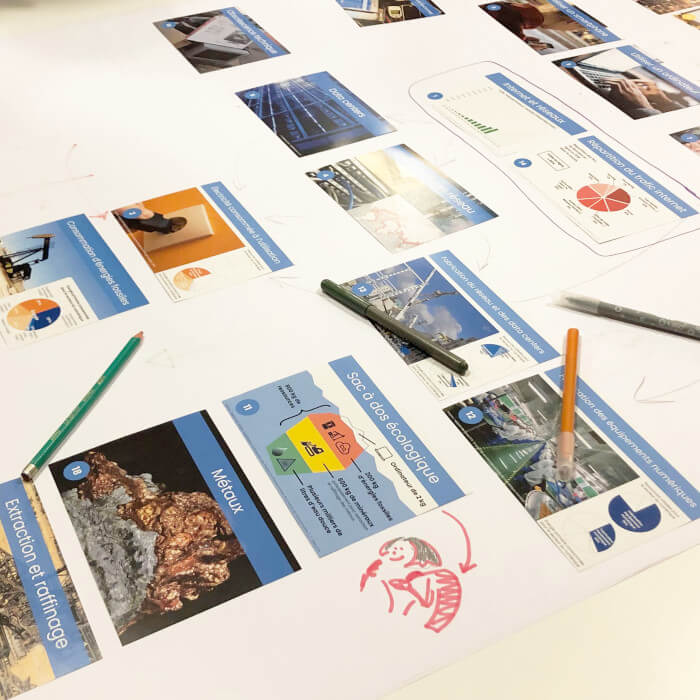
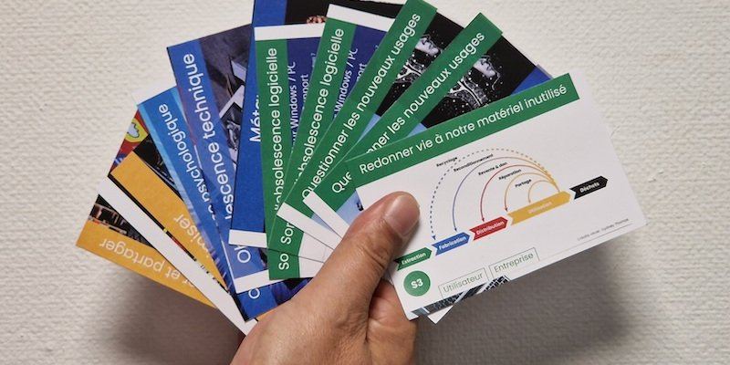

La Fresque du numérique, qu’est-ce que c’est ?
C’est un atelier ludique et collaboratif de sensibilisation autour des impacts du numérique sur l’environnement. Cette animation vise à mettre en avant les actions possibles pour initier une démarche plus durable de nos usages. L’idée est avant tout de rassembler et mobiliser autour d’un même sujet, pour réfléchir à des solutions de façon collaborative.

Les différentes étapes de la création de votre fresque
Lors du cours sur la création de la fresque numérique, nous ne nous sommes pas lancés directement dans sa confection. En effet, dans un premier temps, nous avons discuté avec l’intervenant pour savoir si certains d’entre nous avaient des connaissances sur la Fresque du Climat, quelles étaient nos attentes et comment l’atelier allait se dérouler.
L’intervenant nous a ensuite distribué les cartes, sept par sept, afin que nous avancions étape par étape. Nous avons discuté avec notre groupe pendant une dizaine de minutes afin de nous mettre d’accord sur l’organisation des cartes.
Après chaque bloc de cartes placé, nous faisions un récapitulatif, et une personne du groupe expliquait notre réflexion. Nous avons répété ce processus quatre fois jusqu’à établir notre propre Fresque du Numérique.

Moment fort que j'ai retenu
Il y a eu plein de moments très intéressants pendant ce cours sur la confection de notre propre fresque numérique. Les échanges autour de l’utilisation d’une carte, par exemple, pouvaient créer pas mal de débats, et c’est, je pense, l’objectif principal de cet exercice : nous faire réfléchir sur l’impact du numérique et sur notre futur lié à celui-ci. Un futur qui, finalement, n’est pas si lointain.
La dernière partie du cours était particulièrement intéressante. Pendant 20 minutes, nous avons débattu sur l’impact des bornes automatiques dans les fast-foods et sur la question de savoir si elles avaient un effet positif ou négatif sur le monde. Cela a engendré un énorme débat et nous a permis de découvrir les avis de toute la classe, des avis qui n’étaient pas toujours similaires.